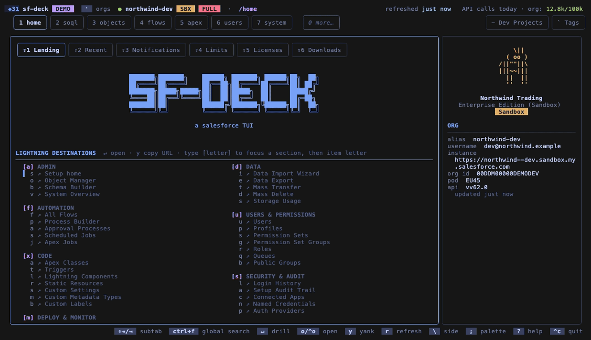
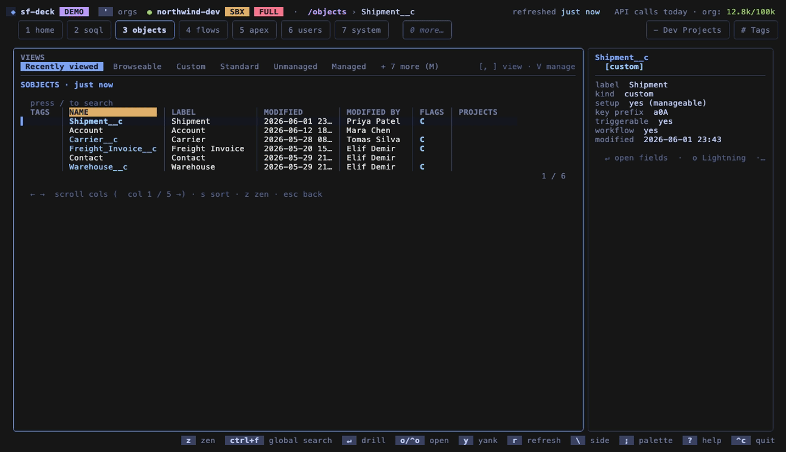
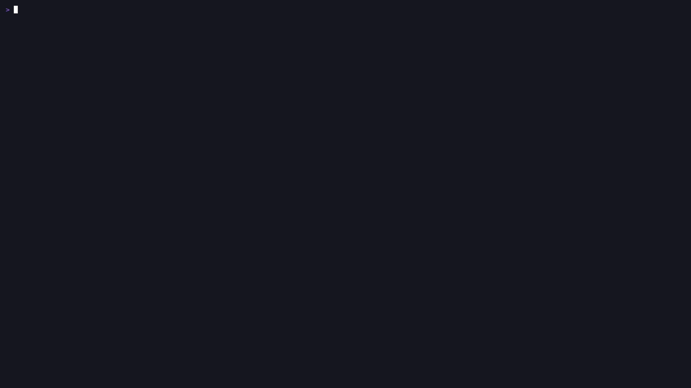

Objects & schema
sObjects, fields, record types, validation rules, triggers, flows. FLS editable in place.
A keyboard-first terminal workspace for every org you authenticate — schema, SOQL, records, deploys, and metadata diffs without leaving your terminal.

brew install --cask Jacob-Stokes/tap/sf-deck
sf-deck --demo
sf CLI sessionEvery authenticated org is a keystroke away. Local caches make repeat visits fast and reduce repeat API calls. Press o to jump into Lightning, or ? for every key on the current screen.
sObjects, fields, record types, validation rules, triggers, flows. FLS editable in place.
Browse, search, drill, edit — export the current view.
Editor with schema autocomplete, saved queries, history, xlsx/csv/json export.
Class & trigger bodies, anonymous Apex + logs, flow versions and activation.
Logins, live sessions, freeze/reset, permission sets, profiles, queues.
Limits, licenses, notifications, and what you recently viewed.
History, component failures, test results, live status.
Apex, flows, and metadata diffed org-to-org.
Tag anything across orgs; collect, export, deploy.
Toggle read/edit per profile and permission set, right in the terminal.
First-launch guide →
Move from an org overview into schema details, then jump to another org without leaving the terminal.
Cross-org walkthrough →
Every org has a safety level. On a read-only org, write actions don't even appear — set per org, changed deliberately.
Core operations are scriptable with versioned JSON, predictable exit codes, and the same per-org safety gate. CLI and live-window IPC each expose the verbs that fit their context.
Agents can also drive a live window over a per-instance Unix socket.
sf-deck soql run --org my-sandbox --query "SELECT Id, Name FROM Account LIMIT 5" --json
sf-deck record get --org my-sandbox --id 001... --json
sf-deck org safety get --org prod --json
{ "ok": true, "command": "soql.run", "changed": false, "data": { … } }You need the Salesforce CLI and at least one authenticated org. If sf org list returns your orgs, you're set up.
macOS & Linux
brew install --cask Jacob-Stokes/tap/sf-decksf-deckGo 1.26.5+
git clone https://github.com/Jacob-Stokes/sf-deckgo build -o sf-deck ./cmd/sf-deckmacOS & Linux
Grab the archive for your platform from the latest release, extract, and move sf-deck onto your $PATH.
No org handy? Try sf-deck --demo to browse three fictional orgs with seeded data.